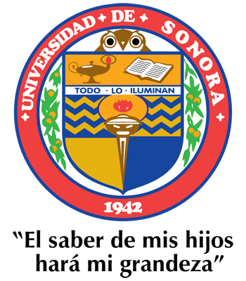

Créditos
Este proyecto fue realizado por
Víctor Hugo Ramírez Ríos como parte de una estancia de
investigación en la
Benemérita Universidad Autónoma de Puebla (BUAP), bajo
la supervisión de la investigadora Dra. Gabriela Yáñez.
Agradezco profundamente el apoyo del
Programa Delfín por hacer posible esta valiosa
experiencia académica, así como a mi institución, la
Universidad de Sonora, por su respaldo y formación.
También extiendo mi agradecimiento a la BUAP por
brindarme el espacio y los recursos necesarios para desarrollar este
proyecto.
